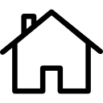

Eren Yeager É um ex-membro da Divisão de Reconhecimento e o principal protagonista de Attack on Titan. Ele morou no Distrito de Shiganshina com seus pais e sua irmã adotiva Mikasa Ackerman até a queda da Muralha Maria. Durante o incidente, Eren testemunhou impotentemente sua mãe sendo comida por um Titã. Este evento levaria ao ódio intenso de Eren pelos Titãs, quando ele jurou varrer todos eles da face da Terra.
